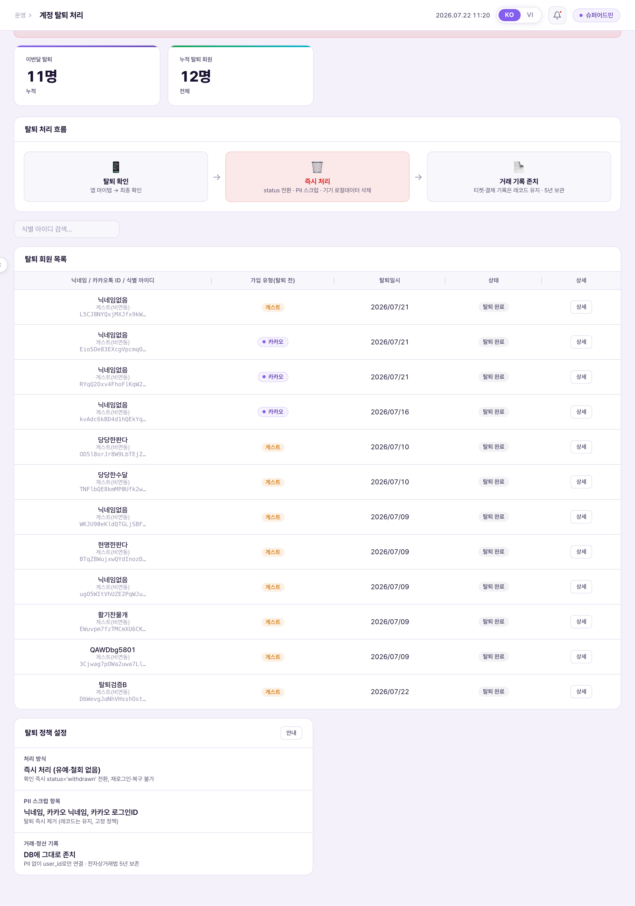
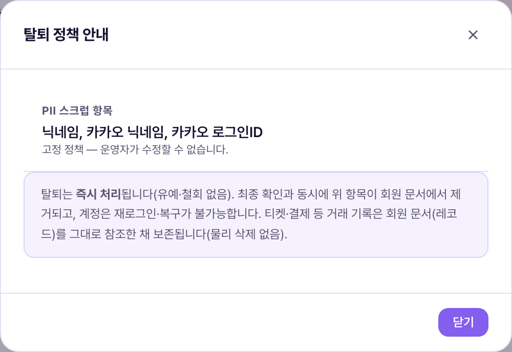
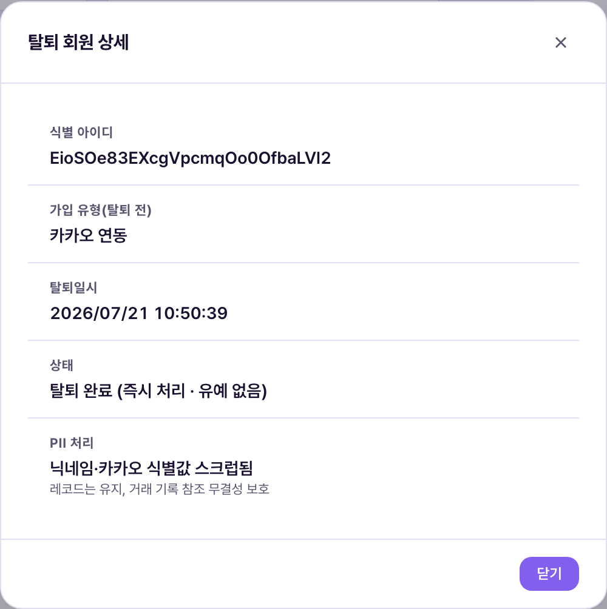

계정 탈퇴 처리 = 회원이 앱에서 탈퇴를 완료한 순간부터 남는 기록을 조회하는 화면. 화면 맨 위 경고 그대로, 이건 법적으로 반드시 있어야 하는 화면입니다 — 회원이 앱 "마이 → 계정탈퇴"에서 최종 확인을 누르면 그 자리에서 즉시 처리되며(유예·철회 기간 없음), 개인정보(PII)는 즉시 지워지고 회원 문서(레코드) 자체는 남습니다. 이 화면을 통해 운영자가 탈퇴를 "승인"하거나 "보류"하는 절차는 없습니다 — 이미 끝난 일을 확인하는 곳입니다.Xử lý hủy tài khoản = màn xem lại các bản ghi để lại ngay sau khi hội viên hoàn tất hủy tài khoản trong app. Như cảnh báo trên đầu màn hình, đây là màn hình bắt buộc phải có theo luật — khi hội viên bấm xác nhận cuối cùng ở "Của tôi → Hủy tài khoản" trong app, hệ thống xử lý ngay tại chỗ (không có thời gian chờ·rút lại), thông tin cá nhân (PII) bị xóa ngay và bản thân document hội viên vẫn còn. Không có quy trình để vận hành viên "duyệt" hay "hoãn" việc hủy qua màn này — đây chỉ là nơi xem lại việc đã xong.



| 요소Thành phần | 의미Ý nghĩa | 비고Ghi chú |
|---|---|---|
| 이번달 탈퇴 · 누적 탈퇴 회원Hủy tháng này · Tổng hội viên đã hủy | 상단 통계 카드 2개2 thẻ thống kê phía trên | 실제 탈퇴 기록 기준으로 자동 집계됨Tự tính dựa trên bản ghi hủy thật |
| 탈퇴 처리 흐름 다이어그램Sơ đồ luồng xử lý hủy TK | 탈퇴 확인(앱) → 즉시 처리(status 전환·PII 스크럽·로컬데이터 삭제) → 거래 기록 존치(5년 보관)Xác nhận hủy (app) → Xử lý ngay (đổi status·xóa PII·xóa dữ liệu local) → Lưu trữ giao dịch (5 năm) | 3단계 모두 회원이 최종 확인을 누른 그 순간 연쇄로 처리됨(중간에 대기 상태 없음)Cả 3 bước đều xảy ra liên tiếp ngay khoảnh khắc hội viên xác nhận cuối cùng (không có trạng thái chờ giữa chừng) |
| 탈퇴 회원 목록 표Bảng danh sách hội viên đã hủy | 닉네임/카카오톡ID/식별 아이디 · 가입 유형(탈퇴 전) · 탈퇴일시 · 상태 · 상세Biệt danh/ID Kakao/ID định danh · Loại đăng ký (trước khi hủy) · Ngày giờ hủy · Trạng thái · Chi tiết | 닉네임은 탈퇴 처리로 스크럽돼 대부분 "닉네임없음"으로 표시됨(정상 동작)Biệt danh đã bị xóa do xử lý hủy nên phần lớn hiện "Không có biệt danh" (hoạt động bình thường) |
| 상세 버튼Nút Chi tiết | 행 클릭 시 식별 아이디·가입 유형·탈퇴일시·상태·PII 처리 내역을 팝업으로 표시Bấm vào dòng hiện popup ID định danh·loại đăng ký·ngày giờ hủy·trạng thái·xử lý PII | 조회 전용 — 이 팝업에서 되돌리기·복구 기능은 없음Chỉ xem — popup này không có chức năng hoàn tác·khôi phục |
| 탈퇴 정책 설정 카드Thẻ Cài đặt chính sách hủy TK | 처리 방식·PII 스크럽 항목·거래·정산 기록 보관 방식 요약Tóm tắt cách xử lý·mục PII bị xóa·cách lưu trữ giao dịch·quyết toán | 버튼 이름이 "안내"로 돼 있음 — "수정"이 아님(확인됨). 이 화면에서 정책 수치를 바꿀 수 없음Nút có tên "Hướng dẫn" — không phải "Sửa" (đã xác nhận). Không thể đổi số liệu chính sách ở màn này |
| 항목Mục | 처리 내용Nội dung xử lý |
|---|---|
| 재로그인·복구Đăng nhập lại·khôi phục | 불가능 — 되돌릴 방법이 없음Không thể — không có cách hoàn tác |
| 보유 티켓·포인트Vé·điểm sở hữu | 탈퇴와 동시에 전부 소멸, 복구되지 않음Biến mất toàn bộ ngay khi hủy, không khôi phục được |
| 회원 문서(레코드)Document (bản ghi) hội viên | 물리 삭제하지 않고 유지 — 티켓·결제 기록이 이 문서를 참조하므로 삭제 시 참조 무결성이 깨지기 때문Không xóa vật lý, vẫn giữ — vì bản ghi vé·thanh toán tham chiếu đến document này, xóa sẽ phá vỡ tính toàn vẹn tham chiếu |
| 거래·정산 기록Bản ghi giao dịch·quyết toán | PII 없는 상태로 5년 보존(전자상거래법). 애초에 user_id로만 연결돼 있어 PII 삭제와 무관하게 추적 가능Lưu 5 năm ở trạng thái không còn PII (Luật thương mại điện tử). Vốn chỉ liên kết qua user_id nên vẫn truy vết được dù đã xóa PII |
| 재가입 쿨타임Thời gian chờ đăng ký lại | 기본 무제한(즉시 재가입 가능). 다만 어뷰징이 확인된 계정은 회사가 재가입을 일정 기간 제한 가능(이용약관 제13조)Mặc định không giới hạn (đăng ký lại ngay được). Nhưng tài khoản bị xác nhận lạm dụng có thể bị công ty giới hạn đăng ký lại trong một khoảng thời gian (Điều 13 điều khoản dịch vụ) |
| 상황Tình huống | 운영자가 하는 일Việc vận hành viên làm | 결과Kết quả |
|---|---|---|
| 개인정보 파기 이행 확인(감사 대응)Xác nhận đã xóa thông tin cá nhân (đáp ứng audit) | 탈퇴 회원 목록에서 대상자를 "식별 아이디"로 검색 → "상세"에서 PII 처리 항목 확인Tìm người cần kiểm tra bằng "ID định danh" trong danh sách hội viên đã hủy → xem mục xử lý PII ở "Chi tiết" | 닉네임·카카오 식별값 스크럽 여부와 탈퇴일시를 근거 자료로 캡처Chụp lại việc đã xóa biệt danh·ID định danh Kakao và ngày giờ hủy làm bằng chứng |
| 탈퇴 사유 트렌드 파악Nắm xu hướng lý do hủy | 이번달·누적 탈퇴 수 추이를 다른 통계 화면(회원 목록 등)과 함께 확인Theo dõi xu hướng số hủy tháng này·tổng cùng với màn thống kê khác (danh sách hội viên...) | 이 화면 자체에는 탈퇴 사유 집계 항목이 없음 — 사유 분석이 필요하면 다른 채널(1:1 문의 등)과 교차 확인 필요Bản thân màn này không có mục thống kê lý do hủy — cần phân tích lý do thì phải đối chiếu kênh khác (1:1 Hỏi đáp...) |
| 탈퇴 정책 변경 검토Xem xét đổi chính sách hủy TK | "탈퇴 정책 설정" 카드의 "안내" 팝업으로 현재 확정 정책(즉시 처리·PII 스크럽 항목) 재확인Xem lại chính sách đang chốt (xử lý ngay·mục PII bị xóa) qua popup "Hướng dẫn" ở thẻ "Cài đặt chính sách hủy TK" | 이 화면에서 직접 수정 불가 — 정책 변경은 이용약관 제13조·개인정보처리방침 개정 절차를 거쳐야 함Không thể tự sửa ở màn này — đổi chính sách phải qua quy trình sửa Điều 13 điều khoản·chính sách bảo mật |